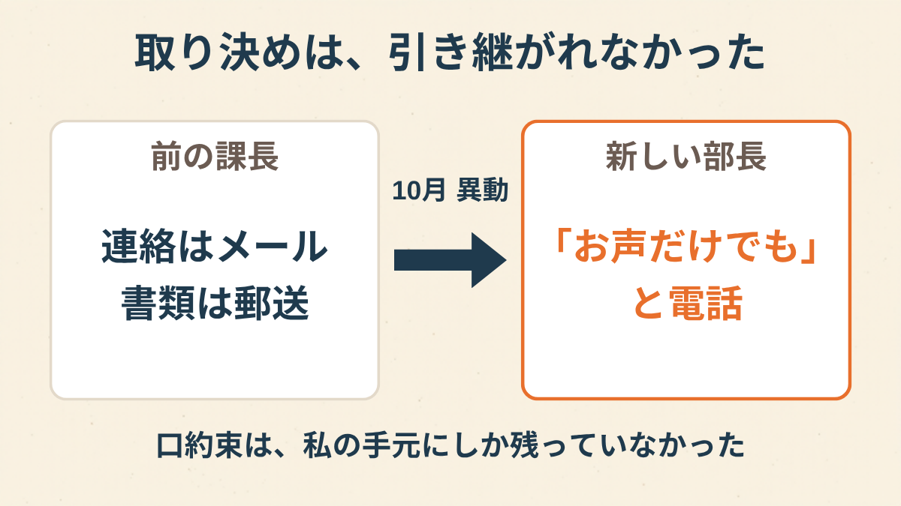
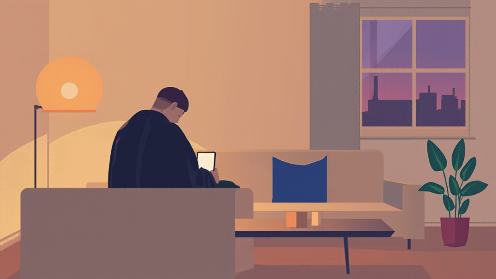
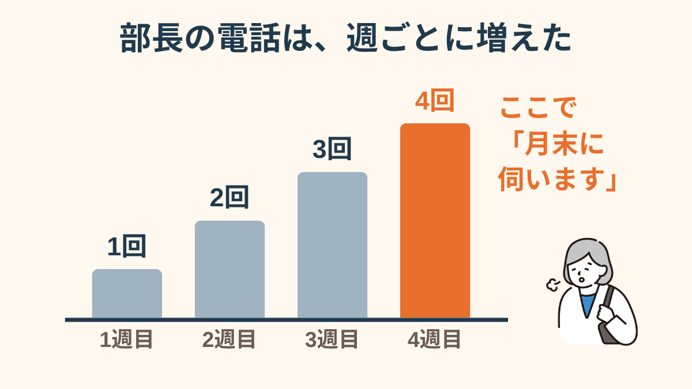
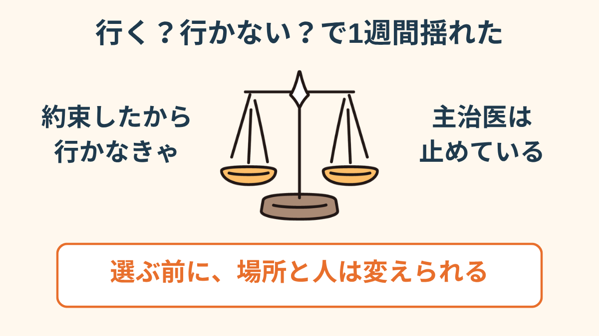
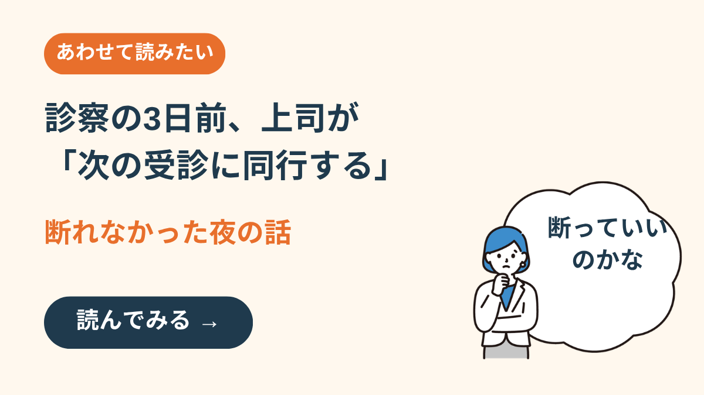
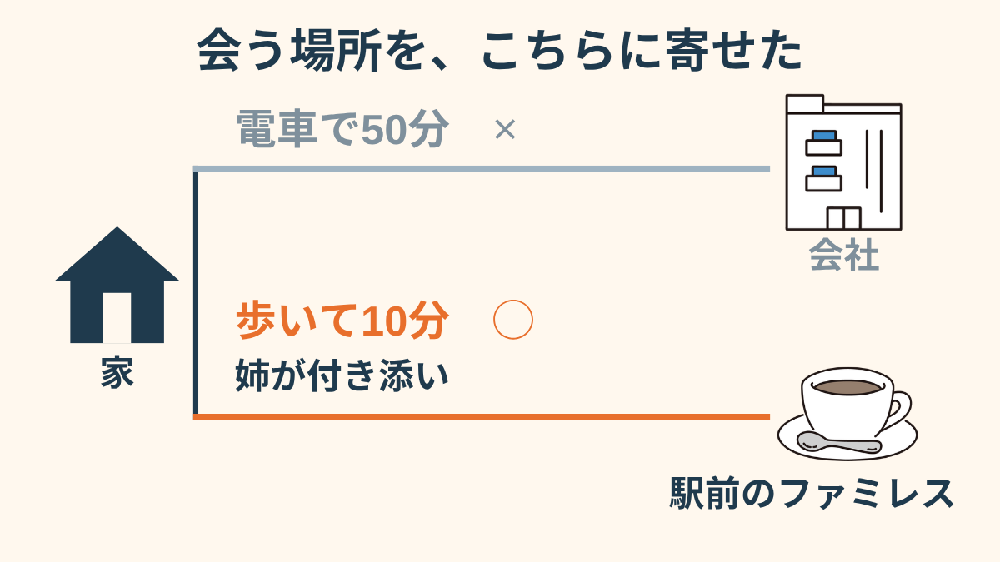
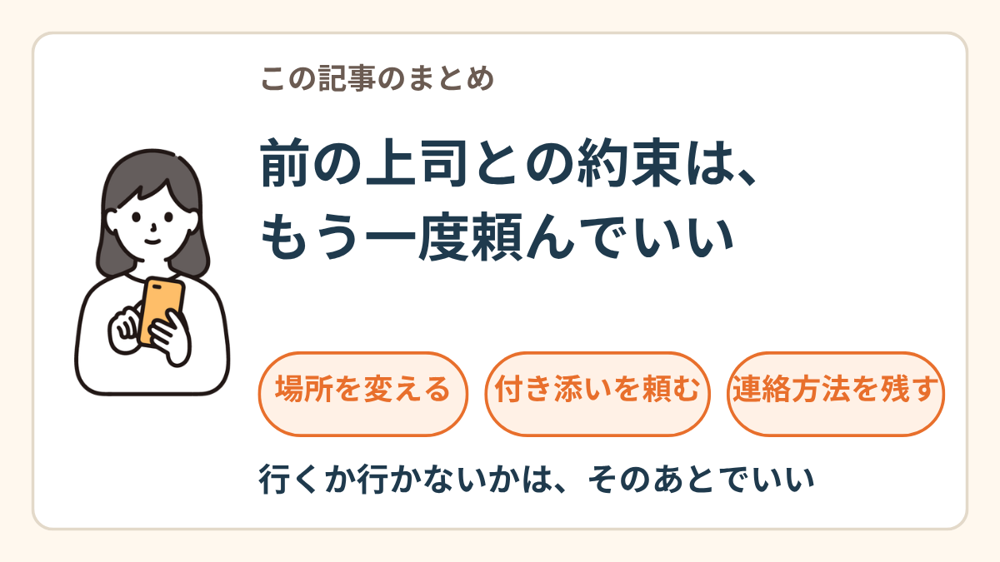

着信の画面には、知らない名前。
休職して5ヶ月目の10月。上司が変わったことを、私はその電話で知った。
「郵送でいいよ」は、課長と一緒にいなくなった
前の課長とは、休職に入るときに決めていた。連絡はメールで。診断書は郵送で。電話はしない。
課長は「こっちから電話はしないから。出られないと気にするでしょ」と言った。その一言に、5ヶ月ずっと守られていたんだと思う。
10月1日付の異動で、課長は別の拠点に行った。後任は、ほとんど話したことのない部長。そして、あの取り決めは、引き継がれていなかった。

「前の課長が『郵送でいいよ』って言ってくれてたのが、当たり前だと思ってたんです。異動のお知らせメールを見て、最初に思ったのが『じゃあ、あれはどうなるの』でした。誰にも聞けなかったけど」
電話を切りたくて、「月末に伺います」
部長の電話に、用件らしい用件はなかった。「体調どう？」「無理しないでね」「いつもお声だけだからねえ」。
最初の週は1回。次の週は2回。3週目は、3回。
電話が苦手なことは、毎回伝えた。音が鳴るだけで動けなくなるので、メールにしてもらえると助かります、と。部長は「そうだよね、ごめんね」と言って、また次の週にかけてきた。

4週目の電話で、部長が言った。「一度、職場に来ていただけるのかな。お会いできるといいんだけど」
早く電話を切りたかった。それだけだった。気づいたら「じゃあ、月末に伺います」と答えていた。
切ったあと、ソファの上で20分くらい動けなかった。主治医からは前から「職場には行かないで」と言われている。行くと約束したことを、主治医に言うのが怖かった。

「新しい部長、悪い人じゃないんですよ。たぶん。毎回『心配で』って言うし。だから余計に『やめてください』が言えなくて。名前が画面に出るだけで、胃のあたりがぎゅっとなる」
行くか行かないか、の前に
それから1週間、頭の中は「行く」か「行かない」かの二択だった。約束したんだから行くべき。でも、行ったら倒れるかもしれない。


次の診察で、主治医に全部話した。怒られると思っていた。主治医は「じゃあ、どう会うかを決めましょう」とだけ言って、メモ用紙に「職場への来所は控えること」と書いてくれた。

診察の3日前、上司から「次の受診に同行する」と電話が来た話 →その夜、部長にメールを書いた。何度も消して、残ったのはこれだけ。
休職中の△△です。月末の件、お気づかいありがとうございます。
体調の都合で、会社に伺うのは難しく、主治医からも控えるよう言われています。もしよろしければ、自宅の最寄りの□□駅の近くでお会いできないでしょうか。家族が付き添います。
また、今後のご連絡は、前の課長のときと同じく、メールでいただけると助かります。
お願いは2つだけにした。会う場所と、連絡の方法。
「主治医に『行くことになった』って言えたのは、診察の最後の1分でした。怒られると思ってたら、『じゃあ、どう会うか決めましょう』って。それだけで、息ができた気がしました」
駅前のファミレスで、25分
返事は、翌朝メールで来ていた。「分かりました。駅前のファミレスで、15時でどうでしょう」
当日は、姉が隣のテーブルに座ってくれた。部長は先に来ていて、ドリンクバーのコーヒーを2杯持ってきた。
新しい診断書を渡して、休職の延長について少し話して、25分で終わった。帰り際に部長が言った。「電話、そんなに負担でしたか。前任から聞いてなかったもので。すみません」
聞いてなかった。それだけだったのか、と思った。少しほっとして、少しだけ、悔しかった。

その日の夜、スマホが鳴って飛び上がった。宅配便の再配達の連絡だった。電話の音は、まだ怖い。でも、部長からの連絡は、それからメールになった。

この記事に、聞いてみたいことはありますか？
「自分の場合はどうなんだろう」と思ったことを、気軽に書いてみてください。いただいた質問は個別にお返事したうえで、匿名で記事にすることがあります。